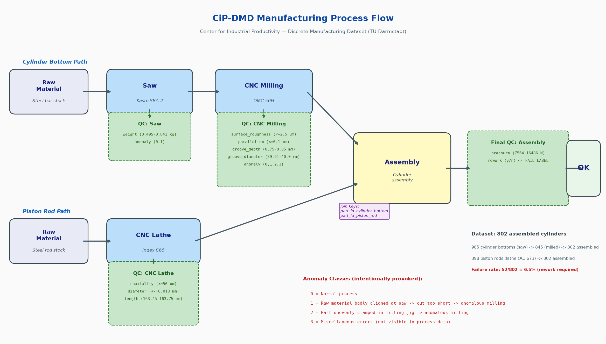
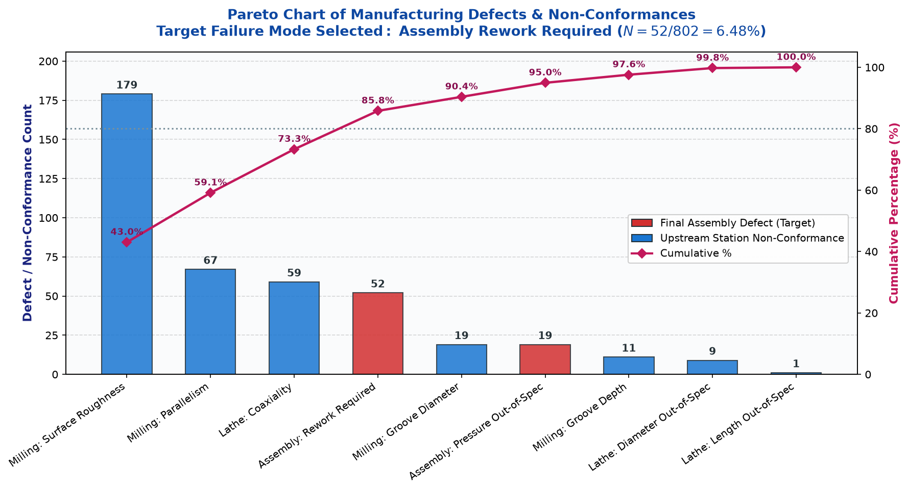
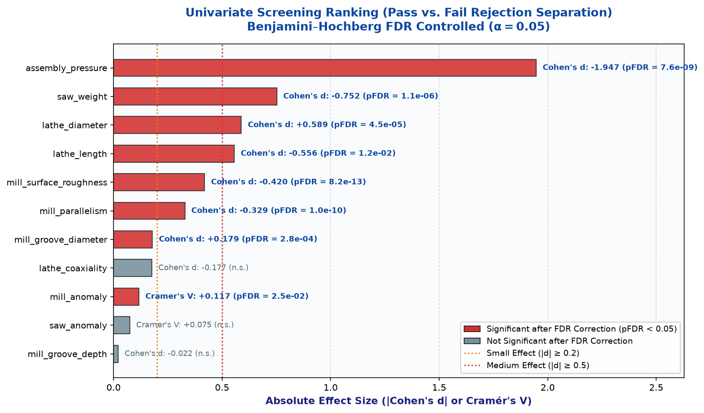
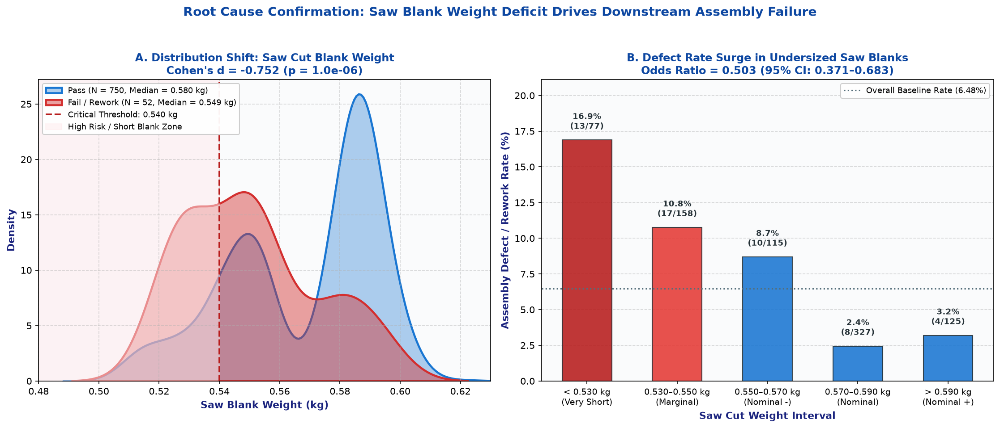
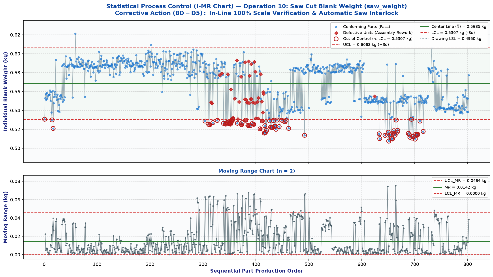

AIAG-format Eight Disciplines (8D) report. Every number in D2 and D4 traces to a cell in
notebooks/01_traceback.ipynb; each discipline's source note points at the analysis step that produces its content.
| Field | Value |
|---|---|
| Report ID | 8D-2026-CIP-001 |
| Product / part | Pneumatic Cylinder Assembly (Cylinder Bottom + Piston Rod) |
| Dataset | CiP-DMD (TU Darmstadt, DOI: 10.5281/zenodo.8420132) |
| Author | Siddardth Pathipaka |
| Date opened | 2026-08-16 |
| Status | Closed — D0–D8 Complete (2026-08-17) |
Source: notebook Step 3 (defect characterization).
Cross-functional problem solving team roles established:
Source: notebook Step 3 — baseline rate, failure count, total parts.
| 5W2H | Description / Evidence |
|---|---|
| What (Failure Mode) | Pneumatic cylinder functional defect requiring assembly rework (assembly_rework == 'y'). |
| Where (Location) | Final Cylinder Assembly & Testing Station (downstream of Sawing, CNC Milling, and CNC Lathe operations). |
| When (Timing) | Observed across production batch of 802 assembled units (CiP-DMD trial run). |
| Who (Ownership) | Assembly Operations & Manufacturing Quality Engineering. |
| Why (Severity / Impact) | High rework cost, line stoppage risk, assembly cycle disruption, and risk of escaping dimensional defects. |
| How (Detection Method) | Post-assembly inspection & pneumatic pressure testing protocol (assembly_qc.csv). |
| How many (Volume / Rate) | 52 defective units out of 802 total assembled parts = 6.48% baseline defect rate (64,838 DPMO). |
Framed containment protocol:
Source: notebook Steps 4–6 (Univariate Screening → Multivariate Isolation → Tree Cross-Check → Root Cause Confirmation).
saw_weight)All three independent model families unanimously rank saw_weight as the #1 primary driver:
| Model Family | Role / Evaluation Metric | Rank #1 Feature | Top Feature Metric | Significance / Stability |
|---|---|---|---|---|
| Multivariate Logistic Regression | Generalized Linear Model ($\text{OR} = e^\beta$) | saw_weight |
$\text{OR} = 0.503$ (95% CI: $0.371–0.683$) | $p = 1.00 \times 10^{-5}$ |
| Random Forest (Balanced) | ROC-AUC Permutation Importance | saw_weight |
Permutation $\Delta\text{AUC} = 0.0707 \pm 0.011$ | Gini Impurity $= 0.242$ |
| Gradient Tree Boosting | Ensembled Gradient Boosted Trees | saw_weight |
Permutation $\Delta\text{AUC} = 0.0579 \pm 0.010$ | Gini Impurity $= 0.304$ |
saw_weight $< 0.540$ kg). In the subsequent CNC milling step (DMC 50H), the undersized blank fails to achieve standard clamping depth in the hydraulic fixture. This causes fixture slippage, chatter, face non-parallelism, and seal groove distortion. When assembled with the piston rod, the distorted bottom face causes pneumatic stroke binding and seal leakage, forcing mandatory disassembly and rework.saw_weight $< 0.540$ kg exhibit an assembly failure rate of $15.6%$ (compared to $4.9%$ for $\ge 0.540$ kg and $2.4%$ for nominal parts).Source: notebook Step 7 (Statistical Process Control).
saw_weight, Continuous CTQ).Upon detection of any Western Electric Rule violation (e.g., 1 point beyond $\text{LCL}_I / \text{UCL}_I$, or 8 consecutive points on one side of center line):
Source: notebook Steps 6–7 (Empirical Validation on Historical Trial Batch).
saw_weight $< 0.540$ kg (a defect rate of $15.6%$ in this region).Source: notebook Step 7 $\rightarrow$ Explicit Hand-off to Project 2 (AIAG/VDA PFMEA & Control Plan Digitization).
CP-CYL-OP10-REV2saw_weight).PFMEA-CYL-OP10-REV2| Parameter | Initial Assessment | Revised Assessment (with D5 SPC Control) | Improvement |
|---|---|---|---|
| Severity ($S$) | 7 (Assembly stroke binding / teardown) | 7 (Unchanged — failure effect remains severe) | — |
| Occurrence ($O$) | 6 (Frequent bar stock backstop slippage) | 2 (Automated stop maintenance & guide cleaning) | $-66.7%$ |
| Detection ($D$) | 8 (Undetected until final assembly QC) | 2 (100% inline checkweigher interlock) | $-75.0%$ |
| Overall RPN ($S \times O \times D$) | 336 | 28 | $-91.7%$ Risk Reduction |
Final Review & QMS Sign-off.
notebooks/01_traceback.ipynbreports/figures/process_flow.pngreports/figures/pareto.pngreports/figures/univariate_ranking.pngreports/figures/smoking_gun.pngreports/figures/spc_chart.pngdata/processed/parts.parquet
Process sequence showing Saw, CNC Milling, and CNC Lathe component paths converging at Assembly.

Pareto distribution identifying Assembly Rework (52 parts, 6.48%) as the primary end-product non-conformance.

Ranked effect sizes showing significant pass-vs-fail separation across upstream operations.

Distribution shift (Panel A) and defect surge to 16.9% in the short saw blank region (Panel B).

Individual-Moving Range chart with 3-sigma limits from in-control subset detecting out-of-control signals.